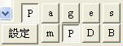

|
|
|
|
|
|
好讀製書程式 mPDB 2.1 周劍輝
免費 mPDB21.zip [下載] 2009/10/26 (359K)
1) 請先在PC或隨身碟上建一個 mPDB 目錄。
2) 將下載的 mPDB21.zip 解壓縮至 mPDB 目錄。
3) 解出的檔案只有兩個：mPDB.exe 及 錯別字.txt。
4) mPDB.exe 立馬可用，沒有其他囉唆的安裝程式。
使用說明
1) mPDB 轉檔設定
2) 快速製書
3) 檔案快速整理工具
4) 檔案編輯視窗
5) 字盤設定
6) 直式預覽
7) 上網找書的訣竅
如何使用 mPDB 直接修改或轉出 PDB 中的純文字？
- 請先在 PC 上建一個目錄，並將要修改或轉出的 PDB 檔置於其中。
- 開啟 mPDB，按左上角的 [設定檔] 按鈕，點選該 PDB 檔即可。
- 應該是瞬間，第一章會出現在中間的編輯視窗。目錄、書名及章數也會出現在上緣的欄位中。
- 若您只是要擷取純文字檔，目錄中可以找到 0.txt, 1.txt, ... n.txt。(0.txt 是書目，1.txt 是第一章等。)
- 若您是要修改，可以用 mPDB 其他的編排功能。完成後，按 [轉成PDB檔]，即可產生修改後的 PDB 檔。)
- 目錄中，還自動產生了一個設定檔，書名.inf，方便您使用。
主要功能簡介
您可用好讀製書程式 mPDB 在 PC 上編輯txt文字檔，並將編輯好的文字檔轉成能以好讀在PC及PDA上閱讀的好讀 PDB 電子書檔。除此之外，還可直接修改由好讀網站下載的 PDB 書檔，或轉出其中的純文字。
好讀最初是為 Palm PDA 所設計，因 Palm 沒有檔案系統，只有所謂的 PDB (Palm DataBase) 資料格式，所以好讀之書檔是儲存成 Palm 的 PDB 格式。目前因為好讀有各種機種之版本，好讀的 PDB 書檔可以跨平台閱讀，因而您可將 PDB 看成是 Personal Digital Book (好讀個人數位書)的縮寫。
之前的 mPDB 版本著重於轉檔工具，雖有檔案編輯視窗和字盤，僅適合幾個字的快速修改。若原始文字檔錯誤百出，如由影像檔辨識出來的文字檔，需要每篇長時間逐字核對修改，實在是件耗時費事的苦差事。針對這些痛苦，mPDB 1.6 版增加了多項方便製書的功能：除了提供多頁字盤，檔案編輯視窗的字型字體可調整，也提供了直式預覽，方便檢視疏失。
1) 適用於 1024x768 及以上解析度。
2) 右側之工具有四頁，用右側底之 m-P-D-B 四個按鈕來選擇。

m 頁：預設頁，檔案快速整理及轉檔工具。
P 頁：尋找/取代，及單字字盤。
B 頁：雙字字盤。
D 頁：三字字盤。
a) 每種字盤又分為五頁，用右側底之 P-a-g-e-s 五個按鈕來選擇。
預設頁是 P。
b) 每個字格可儲存字串，實際上不限於一、二、三個字。
c) 字格有兩種模式：送出，或儲存。
送出：送字格之字串至編輯視窗。
儲存：將編輯視窗中反白之字串儲存在字格。
預設模式是送出，按右側底之 [設定] 按鈕，可切換至儲存模式。為了易於區分，在儲存模式，字盤左側會出現一條垂直紅線。按右側底之 [字盤] 按鈕，可切換回至送出模式。
3) 檔案編輯視窗之字型字體可選擇。按鈕是 m 頁的 [視窗字型設定]。
4) P 頁上之尋找/取代功能，可處理英文字串，如將 'r' 換成 '了'。
5) 檔案編輯視窗，按其下之 [預覽] 按鈕，可切換成直式預覽。
6) 直式預覽之操作方式同好讀。差別是按正中，切換回檔案編輯視窗。
7) 錯別字校正工具。
8) (1.7) 轉換數字功能：若是西元年，如1999年，選擇是一九九九。
9) (1.7) 每一章儲存時，自動備份舊檔至目錄\backup。
10) (1.8) PDB檔後半段正常顯示。
11) (1.9) 可直接修改 PDB 書檔，或轉出其中的純文字。
12) (2.0) 修改 PDB 文字轉出的部份，及關閉介面。
13) (2.1) 刪節號「…」因Big5碼無對應直式標點符號，且在Palm機子上無法將字旋轉九十度，之前改用破折號「｜」代替。這個變通方法有後遺症，若直式刪節號可以顯示 (如PC上或用unicode)，無法復原。本版改用另外一個較細的豎線「│」替代直式刪節號；在直式預覽時，會顯示成直式刪節號。
Unicode 顯示成？的問題
未來將解決這個及相關的問題。
直式刪節號的問題
2009/10/17 (昱荷) 感謝好讀網站提供許多品質精良的電子書。我手上有一些站上沒有收的書籍的電子檔，想製成pdb檔用好讀來閱讀。但我用mPDB轉成直式標點符號時，卻發現「沒有刪節號！」所有原文是用刪節號的地方全用破折號代替了！
我不知是站長的一時疏忽，還是認為兩者沒有差別。但刪節號(……)和破折號(──)在使用上和文意的表達上確是不同的，不該混用。
刪節號(……)是佔兩格，每格三點，其作用在「用於節略原文、語句未完、意思未盡，或表示語句斷斷續續等」。而破折號(──)的作用是「用於語意的轉變、聲音的延續，或在行文中為補充說明某詞語之處，而此說明後文氣需要停頓」。(用法說明摘自“重定標點符號手冊”網頁。)
因此希望站長能夠在mPDB程式中新增刪節號，以便於保持作品的原貌原味。謝謝！
2009/10/26 mPDB 2.1 改用另外一個較細的豎線「│」替代直式刪節號；在直式預覽時，會顯示成直式刪節號。
|
|
|
|
|
|
|
|
| 搜尋好讀 |
|
好讀第17年了。
有好讀真好，有你也真好。但不知遍及各地的你，究竟有多少。若你從未或很久沒贊助過好讀，請按這裡，贊助好讀美金或人民幣十元，讓我知道你存在。
11/25香港 Dennis C
幾年前由朋友介紹得悉好讀，多年來在旅途中它都帶給我很多樂趣。香港地方狹小，不少書都因地方問題而送人或丟棄，好讀卻帶給了我很多閲讀的方便、亦節省了儲存的位置。衷心多謝各位工作仝人！
11/19 美國紐約 June
發現好讀幾年了，但現在才發現這好讀留言板。抱歉呢，理應更早道謝。身在海外，要看一本中文書不是易事。書店售書種類少，價錢高；圖書館借書種類更少。幸好發現好讀網，可以一解書癮。衷心感謝所有有心人上載和校對。
11/17 大陸 Shirley
偶然發現好讀網這塊寶地真的很驚訝，網絡上有這樣安靜舒適的地方可以閱讀電子書，對我這種資金短缺的學生真的很意外很開心！
11/16 香港 chair chun wai
因為買了Kindle的緣故，所以才發現"好讀"這個地方。感謝"好讀"一直的更新和提供書本給大家。感謝感謝
11/15 香港 mike chan
我認識好讀是因爲kindle。那時中學買了kindle，需要找找電子書，因此在網上發現了好讀。對於繁體字kindle用家，這是個大福音！
11/13 大陸 BerthaR
今天因為Kindle的緣故找書，才發現好讀這個地方。感覺是一方淨土，公益地為書友們獲取知識省下了不少財力，節省了大家的時間：）目前我只是個高中生，提供的也只有十塊錢而已啦。十七年的好讀真是令人敬佩！希望你們知道我的感謝，還有知道更多人的感謝！
11/9 香港 MJ
從小喜愛看書，看書人也許都知道要管理保存書本是不容易的（尤其香港的地方空間更有限）。今年開始嘗試電子書，看看能否接受。因為好讀網的海量書本，小弟所喜愛的黃易＋衛斯理，還有準備開始看的金庸也不用愁了。感謝好讀！
>> 更多
|
|
|